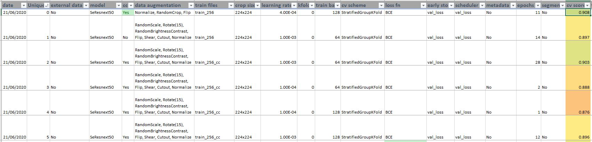
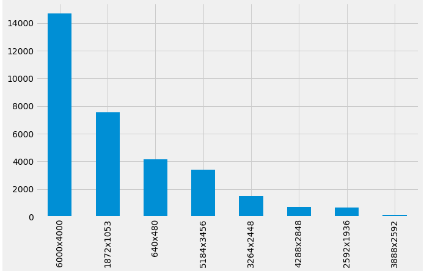
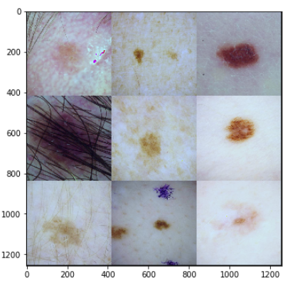

SIIM-ISIC Melanoma Classification - my journey to a top 5% solution and first silver medal on Kaggle
Winning solution for SIIM-ISIC Melanoma Classification
As part of this blog post I share my winning solution for SIIM-ISIC Melanoma Classification Kaggle Competition.
1 Introduction
Recently, Kaggle launched an interesting competition to identify melanoma in images of skin lesions. Skin cancer is the most prevalent type of cancer. Melanoma, specifically, is responsible for 75% of skin cancer deaths, despite being the least common skin cancer. The American Cancer Society estimates over 100,000 new melanoma cases will be diagnosed in 2020. It’s also expected that almost 7,000 people will die from the disease. This was an important competition as with other cancers, early and accurate detection—potentially aided by data science can make treatment more effective.
It was also a particularly challenging competition with highly imbalanced dataset with only 2% positive cases and the rest 98% negative cases.
In this blog post, I will be sharing my journey from the start and also the solution that led to 153 private leaderboard rank from a total of 3314 teams.
2 Key learnings
Before we begin with the solution summary, I want to highlight some of my key learnings from having participated and worked on this competition for over two months.
2.1 Keep fighting until the end
I wasn’t much of a Kaggler until before this competition and as a result usually ended up in bottom 50% pretty much in all competitions I had participated in before this one. It was disheartening and I usually blamed hardware, lack of knowledge in CV or made up any other excuses I could come up with for my bad results and would leave past competitions mid way - I was wrong! As you’ll read, the complete solution for ISIC was built using a single GPU and Kaggle TPUs(free resource).
Something I promised myself at the start of this competition was to not make an excuse and actually finish the whole project regardless of the position I would end up with. This was one of the biggest and key difference in my approach compared to before. And with this mindset, I took the first step.
2.2 Research past solutions
I was quick to find out in the early days that this wasn’t the first time SIIM (Society for Imaging Informatics in Medicine) was hosting such a competition. In fact, such competitions have been held before in 2016, 2017, 2018 and 2019.
The first step I took was to read pretty much all the solutions that did well in ISIC 2019. For someone who didn’t know much about medical imaging - this was a gold mine of hidden treasures. I remember making notes on: - How to do image preprocessing - Which data augmentations to use - How to run inference - Which Model architectures work best for this type of data - Is it also possible to use patient metadata to improve results
And many more similar details. Just doing this filled me with a lot of confidence - now my mind was filled with ideas and I couldn’t wait to try them on!

2.3 Use a standard code structure
Thanks to Abhishek Thakur’s code walkthrough for this very competition - I was quick to adapt a standard code structure. This really proved as a good baseline to begin experimenting with.
2.4 Keep a log of your experiments
This is one of the most important steps that really helped me steer towards a top 5% solution. Having a log of my experiments, I could quickly find out things that worked for me and things that didn’t and then try again.
I ran more than 80 different experiments and you can find them here.

3 Solution Summary
Above were some of the key learnings that really helped me get my first silver medal. In this section, we focus on the technical and theoretical details of the solution and the complete code can be found here.
3.1 Image Preprocessing
The first challenge was to preprocess the medical images - particularly mostly all images were rectangular and of different shapes and sizes.

As can be seen in the image above, most of the images are of height 6000px and width 4000px. And the complete training set consists of images with various sizes. We cannot use this raw data directly as input to our network and therefore need to resize the images.
So the first step is to be able to resize images. There were many approaches that the winners used: - Center crop the image to square with size equal to shorter side and resize to required input training resolution - Use image segmentation to segment the images to area of interest - Directly resize the images to required input resolution
We ended up using another approach of resizing the images such that shorter side of the image is equal to the input training resolution while mantaining the aspect raio. This approach was also used by the 2019 ISIC competition winners as mentioned here.
While the reshaped images are still rectangular, adding extra data augmentation of RandomCrop makes them square and also our models then see a different part of the image in every epoch - thus reducing overfitting. Also, this way we do not lose any information of the image in the resized images as opposed to the center crop approach.
The resized images look like below:

But as you can see, the images have different colors, varying brightness and contrast. This is because the dataset was collected by using images from different distributions. To make sure that our models don’t have to deal with this much noise, another key step was to use color constancy techniques. Preprocessing images using color constancy makes sure that the images appear to be from the same distribution with similar brightness and contrast.
After applying this preprocessing step, the images now look like:

As you can see, now there is much less variability in between the images and just using this one step of preprocessing significantly improved validation scores. This approach was also used by the 2019 winners.
To preprocess images, using color constancy, simply follow the steps mentioned in code repository here.
Now that we have preprocessed our images, we are ready to train the models.
3.2 Cross Validation
We used Chris Deotte’s triple stratified folds for validation. These can be found here.
There were some duplicate images that were part of both train and test set and therefore, using a GroupKFold wasn’t sufficient.
3.3 Model Architecture
Particularly for this competition, we used EfficientNets. I have written a previous blog post explaining EfficientNet model architecture here.
Many participants in this competition also found EfficientNets to work best for this competition - particularly an ensemble of them. We also tried SeResnext-50, DenseNet, MobileNet model architectures, but found EfficientNets to have the highest CV score.
Chris Deotte shared an excellent post on how to ensemble different model architectures trained on different input resolutions here. We used a similar approach and trained a total of 15 five-fold models and used weighted average predictions based on out of fold (OOF) score. Models performing better on OOF were given higher weights.
The final ensemble consisted of various models trained on various input resolutions - 224, 384, 480, 512 and 672.
3.4 Loss Function
All models were trained using Focal Loss. We found this loss function to work better than Binary Cross Entropy loss due to the high imbalance in the dataset. We also tried Weighted Binary Cross Entropy but Focal Loss gave us the best CV score so we trained all models(except the ones from public kernel) using Focal Loss.
3.5 External Data
Some of the models were also trained using ISIC 2018 and 2019 external data. There were two strategies that were tried before adding external data: - Add only positive classes - Add complete training data
We found adding positive cases worked better than adding complete external data.
3.6 Public Kernels
Chris Deotte’s kernel used TPUs and was one of the best Public kernel for this competition. We re-trained 5 different models of varying image sizes that were part of the final ensemble.
3.7 Ensemble
The final predictions were based on a weighted average ensemble with higher weights given to those models with higher CV scores. The final ensemble consisted of the following models:
- 384x384 eff-B6 TPU without cc
- 224x224 eff-b1 GPU with cc
- 256x256 eff-b3 GPU with cc
- 384x384 eff-b4 GPU with cc
- 672x672 eff-b3 GPU with cc
- 480x480 eff-b4 GPU with cc and center crop images
- 384x384 eff-b4 GPU with cc + external data
- 512x512 eff-b4 TPU without cc + external data (only 2019)
- 256x256 eff-b4 TPU without cc + external data (only 2018)
- 256x256 eff-b4 TPU without cc + external data (2018 & 2019)
- 384x384 eff-b5 TPU without cc + external data (2018)
- 512x512 eff-b3 GPU without cc + external data (2018)
- 512x512 eff-b5 GPU without cc
- 384x384 eff-b5 GPU with cc pseudo labeled
- 256x256 eff-b4 GPU with cc pseudo labeled
3.8 Unstable Public LB
Due to such a low number of positive classes, the Public LB scores were found to be pretty unstable and did not match the CV scores. To counter this, we created an ensemble of models trained using different data augmentation strategies, image sizes and preprocessing techniques.
4 Conclusion
It doesn’t take something magical to produce a good quality solution, however it does take hard work. I remember working really hard for the past 2 months on this competition - starting from the scratch not knowing what works is quite a challenge. At the beginning of the competition running lots of different experiments with smaller image size helps get a better understanding of the challenge and generally of what works. Once, a baseline solution exists, it is then much easier to further improve and finetune the pipeline.
To re run the experiments - refer to this GitHub repo.
If you feel I have missed out on anything - please feel free to ask any questions regarding my approach at @amaarora.
Also, feel free to subscribe to my blog here to receive regular updates regarding new blog posts. Thanks for reading!
5 Credits
Thanks to Chris Deotte for his selfless work in this competition - it definitely made participating in this competition a lot more easier and fun!